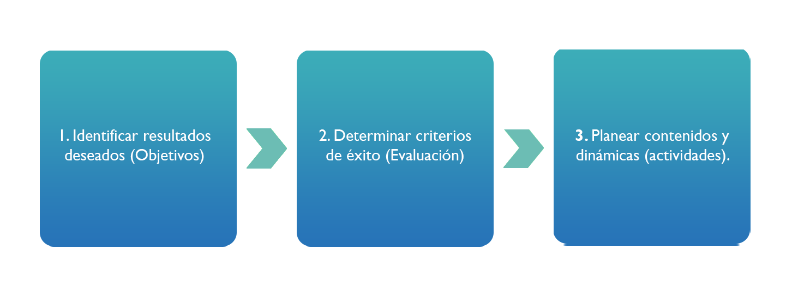

Para conocer toda la información, haga clic en la flecha de la derecha.
[1]
Introducción
Una adecuada planeación de las sesiones de trabajo nos asegurará alcanzar las metas a corto plazo mientras, y de manera simultánea, vamos avanzando progresiva y secuencialmente en el logro de nuestros objetivos de mediano plazo y el desarrollo de las competencias requeridas en nuestro programa de trabajo.
Propósito
El académico planificará y desarrollará cada una de las sesiones de aprendizaje para asegurar el logro de una de las unidades de competencia requeridas para elaborar el producto integrador de la experiencia educativa.
En este punto ya hemos identificado las grandes ideas de nuestra experiencia educativa, así como también hemos definido los aprendizajes clave; los productos finales (fase 1) y las formas de evaluar los productos y subproductos de aprendizaje (fase 2). Ahora, es el momento de diseñar nuestro plan de aprendizaje.

Fuente: Elaboración propia.
Un plan de aprendizaje cuenta con un núcleo, una intención central que nos oriente a lo largo del proceso de desarrollo y transferencia de competencias por parte de los estudiantes. Una vez que se tiene claro qué vamos a enseñar y cómo lo vamos a evaluar, empezaremos a generar el plan de aprendizaje. ¿Qué vamos a enseñar y a qué profundidad? ¿Cuáles serán los materiales y actividades a emplear? ¿En qué secuencia los trabajaremos? ¿Tenemos el tiempo suficiente para enseñar y evaluar los avances conforme van sucediendo?
A continuación, revise la siguiente tabla de apoyo para la fase 3, la cual le servirá de guía al momento de crear la propia en las actividades de ésta, la última fase:
3.2. Líneas de aprendizaje
Retomemos la estructura de aprendizaje generada en el paso 10 de los criterios de creación de una rúbrica:
Fuente: Elaboración propia.
Esta jerarquización de aspectos a evaluar, determinará la ruta de aprendizaje al momento de planificar las clases y crear los contenidos. Tomemos la gráfica anterior como ejemplo.
Para acceder a la información, haga clic en las flechas:
[3]
Tenemos un objetivo central de aprendizaje: Desarrollar el pensamiento crítico en nuestros estudiantes.
Para ello vamos a abordar cuatro líneas de aprendizaje: Cruzar la información; validar fuentes; identificar variables; mantener una lógica argumentativa.
Para cubrir cada línea de aprendizaje, tendremos dos secuencias didácticas (conjunto de clases con un objetivo claro y definido), lo que nos genera un total de ocho secuencias didácticas en la experiencia educativa.
Viéndolo de manera procedimental, una vez que hayamos cubierto estas secuencias didácticas, podremos asegurar el logro de cada una de las líneas de aprendizaje y, en suma, la adquisición de la habilidad buscada en la experiencia educativa.
[4]
[5]
Una vez que identifiquemos las competencias buscadas en la experiencia educativa, podremos definir cuáles serán aquellos aprendizajes clave para alcanzarlas. Dichos aprendizajes se convertirán en las líneas de trabajo de nuestra experiencia educativa, al ser aprendizajes complejos será necesario dedicarles una serie de clases con logros escalonados y revisiones constantes para asegurar el logro y transferencia de estos conocimientos y habilidades.
A continuación, veamos cada uno de estos aspectos más a detalle.
Para acceder a la información, haga clic en las pestañas correspondientes.
En la secuencia didáctica el conocimiento avanza en amplitud y profundidad, pudiendo abarcar diversas extensiones de tiempo y distintos espacios de trabajo. Así, una clase de cinco horas seguidas puede contener varias secuencias didácticas y ser impartida en varios espacios. Veamos un ejemplo:
Supongamos que la clase va a tratar acerca de organizar una campaña para sembrar árboles en la facultad. Empezaremos por definir los objetivos de trabajo de cada secuencia:
Comprender las consecuencias del cambio climático y su relación con la vegetación (45 minutos).
Explorar los espacios de la Facultad donde se podrían sembrar árboles (45 minutos).
Analizar la reglamentación del uso de espacios de la Facultad (30 minutos).
Revisar cuál es la flora de la región para asegurar su adaptabilidad (1 hora).
Diseñar un plan de reforestación, determinando la cantidad y tipo de flora a utilizar en los espacios elegidos (1 hora).
Como puede observar, las secuencias tienen tiempos diferentes, dependiendo de la complejidad inherente a los propósitos a lograr en cada una de ellas. Recuerde que es importante dejar espacios en su planeación para revisar y dar seguimiento, además de establecer tiempos de descanso para los estudiantes.
Cada secuencia didáctica busca lograr sólo un propósito de aprendizaje para mantener claridad y objetividad en la enseñanza. Ahora que definimos los objetivos y los tiempos estimados, es necesario empezar a seleccionar o crear los materiales de trabajo de cada una de ellas.
Cabe aquí hacer la aclaración de que mientras los propósitos de la secuencia didáctica definen las estrategias de enseñanza, las expectativas de aprendizaje se enfocan en lo que se espera del alumno, cerrando de esta manera el ciclo de enseñanza-aprendizaje.
Tenga en cuenta que los materiales de estudio deben estar mediados por el profesor con base en una serie de criterios que faciliten su acceso y aprendizaje. En la siguiente tabla encontrará algunas recomendaciones para los aspectos más comunes:
Criterio
Recomendación
El tiempo disponible para trabajarlo, de acuerdo con su planeación de clase.
Los estilos de aprendizaje de los miembros del grupo de estudio (auditivo, visuales, kinestésicos).
Los problemas de aprendizaje que pudieran tener algunos estudiantes para generar materiales de refuerzo.
El contexto en el que viven, pues esto determinará los tipos de materiales y la cantidad de los mismos en función de los recursos disponibles por la comunidad estudiantil.
El grado de habilidad logrado por el grupo al momento de impartir la secuencia didáctica.
Fuente: Elaboración propia.
Diseñe los materiales de tal manera que sean una preparación para que el estudiante pueda cumplir con sus expectativas de aprendizaje. Mediar implica seleccionar, depurar, complementar, integrar e involucrar al estudiante con el material de trabajo. No caiga en la trampa de confundir un excelente libro de texto (o un conjunto de ellos) con su experiencia educativa, tome lo que necesite, ajuste y modifique para garantizar la adquisición de las competencias para la vida que se ha fijado con antelación. Recuerde, usted es el diseñador de sus experiencias educativas.
Elaborar materiales de estudio puede ser una tarea extenuante cuando se diseñan por primera vez para la experiencia educativa. Sea benevolente con usted mismo, considere que sus materiales, aunque buenos, no deben ser perfectos al primer intento. Vaya desarrollándolos y poniéndolos a prueba poco a poco, integre aquellos que han probado ser funcionales, rediseñe o reemplace aquellos que aún no son lo bastante claros para el alumnado.
Después de tres o cuatro revisiones de su experiencia educativa, podrá generar una versión final de la misma, la cual ya solamente necesitará actualizaciones menores para sus siguientes ediciones, agilizando el trabajo y asegurando la calidad en el proceso de enseñanza-aprendizaje. Sin embargo, habrá casos excepcionales (como migrarlo de una plataforma presencial a una virtual). En estos casos tendremos que plantearnos la pertinencia de mantener los materiales de aprendizaje originales o si deberían ser modificados por otros más acordes a las ventajas y limitantes de esta nueva plataforma.
Dado que nuestro objetivo es desarrollar competencias en el alumnado, debemos adoptar un enfoque estructurado de tareas encadenadas en lugar del tradicional enfoque de actividades sueltas y desarticuladas. En la siguiente tabla podrá ver la diferencia entre ambas:
Fuente: Elaboración propia.
La estrategia de trabajo de sus secuencias didácticas se organiza en tres momentos: Inicio, desarrollo y cierre (ver el esquema). Tenga presente que cada vez que abordamos un nuevo propósito de aprendizaje, debemos de pasar por estas tres etapas. De esta forma, nos aseguramos de evaluar los alcances logrados en cada uno de nuestros propósitos de aprendizaje, monitoreando que los aprendizajes clave sean alcanzados por todos nuestros estudiantes.
Fuente: Elaboración propia.
Es imprescindible que considere que cada sesión con sus alumnos puede tener una o varias secuencias de aprendizaje, dependiendo de cuál sea su estrategia de trabajo. Recuerde que debe encuadrar todas las actividades dentro del tiempo que le fue asignado en la experiencia educativa. Si deja trabajo extraclase, éste no debe exceder el 50% del tiempo programado semanalmente, por ejemplo, si tiene destinadas seis horas de clase, podrá ocupar como máximo tres para tareas extraclase.
Esto obedece a que los alumnos requieren tiempo para actividades de mantenimiento y esparcimiento, así como para trabajar el resto de las experiencias educativas que estén cursando en el ciclo escolar. Transgredir esta norma implica demeritar la calidad de vida del estudiante y poner en riesgo los resultados de todo el programa de estudios.
Veamos un ejemplo de cómo se construye una secuencia didáctica retomando lo revisado hasta ahora:
Castelló-Mayo, E., López-Gómez, A., & Méndez-Fernández, R. (2019). La transferencia de conocimiento desde la universidad innovadora. Un modelo de gestión de la información en el contexto digital: el caso de estudio PIEDD. Revista Latina de Comunicación Social, 74, 537-553. https://doi.org.ezproxy.uv.mx/10.4185/RLCS-2019-1344
González, M. E. & García, C. (2019). Secuencias didácticas desde un enfoque de desarrollo de competencias. Ikastorratza: E-Revista de Didáctica, 22, 43-60. http://www.ehu.eus/ikastorratza/22_alea/3.pdf
Mestre, U., & Valdés, P. R. (2010). Modelo de enseñanza-aprendizaje con tecnología multimedia para la modalidad de estudio semipresencial. Praxis Educativa (Arg), XIV(14), 35-41. https://www.redalyc.org/articulo.oa?id=153115865004
Después de revisar los materiales sobre "El plan de aprendizaje", responda las siguientes preguntas planteadas en la hoja de trabajo. Puede apoyarse de la tabla "Plan de aprendizaje".
Descargue el siguiente documento para realizar la actividad antes planteada:
Criterios de desempeño:
Criterio
Competente
En desarrollo
Principiante
Presentación
Su portada incluye nombre del curso, del alumno y de la asignatura.
El documento cumple con los criterios de presentación de la APA.
Cumple parcialmente con los criterios de entrega.
Su documento no incluye una portada.
Introducción y conclusión
Presenta una introducción de su trabajo y una conclusión en la que comenta los aprendizajes logrados.
Cumple parcialmente con los criterios de entrega.
Su documento no incluye introducción ni conclusión.
Saber
Responde claramente a todas las preguntas de la hoja de trabajo.
Cumple parcialmente con los criterios de entrega.
No cumple con los requisitos planteados.
Saber hacer
En sus respuestas relaciona los objetivos de aprendizaje con el desarrollo y transferencia de competencias por parte del alumno.
Cumple parcialmente con los criterios de entrega.
No cumple con los requisitos planteados.
Saber ser
Relaciona las grandes ideas de su experiencia educativa con la construcción activa de significado y profundidad en los aprendizajes.
Cumple parcialmente con los criterios de entrega.
No cumple con los requisitos planteados.
Lineamientos de entrega:
Titule el archivo con la siguiente nomenclatura: Act6_PrimerApellidoyPrimerNombre. Por ejemplo: Act6_VillanuevaMariaTeresa.
Envíe su archivo en formato PDF, a través del apartado Actividad 6 de la plataforma EMINUS 4, a más tardar en la fecha establecida en el Calendario de entregas.
Actividad 7: Creación de la estructura de aprendizaje de la experiencia educativa.
Descripción:
Tomando como referencia la estructura de aprendizaje presentada en el Tema 3.2. Líneas de aprendizaje, elabore la correspondiente a su experiencia educativa. Recuerde que las líneas de aprendizaje tienen que estar evaluadas en la rúbrica del producto integrador y que cada línea que cada línea debe tener, al menos, una secuencia didáctica.
En un documento de Word añada su estructura de aprendizaje junto con una explicación del porqué eligió organizar cada uno de los tres niveles de la forma en que lo muestra en su esquema.
Criterios de desempeño:
Criterio
Competente
En desarrollo
Principiante
Presentación
Su portada incluye nombre del curso, del alumno y de la asignatura.
El documento cumple con los criterios de presentación de la APA.
Cumple parcialmente con los criterios de entrega.
Su documento no incluye una portada.
Introducción y conclusión
Presenta una introducción de su trabajo y una conclusión en la que comenta los aprendizajes logrados.
Cumple parcialmente con los criterios de entrega.
Su documento no incluye introducción ni conclusión.
Saber
Su estructura de aprendizaje genera un dominio completo de la(s) competencia(s) buscada(s).
Cumple parcialmente con los criterios de entrega.
No cumple con los requisitos planteados.
Saber hacer
En su actividad demuestra una clara relación entre la competencia a desarrollar y las líneas de aprendizaje señaladas en su estructura.
Cumple parcialmente con los criterios de entrega.
No cumple con los requisitos planteados.
Saber ser
Sus secuencias didácticas contemplan el desarrollo de conocimientos, habilidades y valores en los estudiantes.
Cumple parcialmente con los criterios de entrega.
No cumple con los requisitos planteados.
Lineamientos de entrega:
Titule el archivo con la siguiente nomenclatura: Act7_PrimerApellidoyPrimerNombre. Por ejemplo: Act7_VillanuevaMariaTeresa.
Envíe su archivo en formato PDF, a través del apartado Actividad 7 de la plataforma EMINUS 4, a más tardar en la fecha establecida en el Calendario de entregas.
Actividad 8. Foro: "Mi estructura de aprendizaje".
Descripción:
Después de revisar los temas abordados en esta fase, presente su estructura de aprendizaje tomando como ejemplo la que se presentó en el Tema 3.2. Líneas de aprendizaje y en su comentario aborde, brevemente, los siguientes puntos sobre la experiencia educativa que imparte:
La carrera y área en donde se inserta la experiencia educativa que imparte a sus alumnos.
¿Cuál es el objetivo o competencia central a desarrollar en el curso?
¿Qué conocimientos clave se abordan en las líneas de aprendizaje?
¿Cuáles son los propósitos de aprendizaje en cada una de las secuencias didácticas que diseñará en la experiencia educativa a su cargo?
Participa en el Foro respondiendo las preguntas guía.
Cumple parcialmente con los criterios de entrega.
No responde las preguntas guía en su participación.
Interacción con sus compañeros
(2 puntos)
Responde de forma reflexiva y propositiva a dos de sus compañeros.
Cumple parcialmente con los criterios de entrega.
No comenta las participaciones de sus compañeros.
Lineamientos de entrega:
Integre su participación en el apartado Actividad 8. Foro: “Mi estructura de aprendizaje” en la plataforma EMINUS 4, a más tardar en la fecha establecida en el Calendario de entregas.
Actividad 9:Secuencia didáctica.
Descripción:
Tomando en cuenta lo que se revisó en esta fase, así como en las anteriores, elabore la secuencia didáctica de su experiencia educativa, presentando la planificación inversa abordando los siguientes puntos:
La carrera y área en donde se inserta la experiencia educativa.
La(s) competencia(s) para la vida que busca desarrollar durante el curso.
¿Cuáles son las grandes ideas que busca dialogar con sus alumnos en la experiencia educativa?
¿Cuáles son los conocimientos clave de su experiencia educativa? ¿Cuáles serían las consecuencias de no alcanzarlos?
¿Qué relación tiene su producto integrador con la adquisición de los conocimientos clave por parte de los alumnos?
¿Cuáles serán las líneas de aprendizaje a desarrollar a lo largo de su experiencia educativa?
¿Están contempladas las líneas de aprendizaje en su rúbrica de evaluación del producto integrador? ¿Cómo validará la adquisición de estos conocimientos y habilidades? (presente y explique su rúbrica).
¿Qué habilidades y conocimientos busca desarrollar en cada una de las secuencias didácticas de su experiencia educativa? (inserte aquí la estructura que presentó en el Foro).
Entregue, al menos, una secuencia didáctica de las señaladas en su estructura (tome de ejemplo el video del tema 3.3.4).
Concluya con una reflexión acerca de la utilidad de la planeación inversa para la adquisición y validación de competencias en el entorno universitario.
Para consultar el ejemplo, descargue el siguiente documento, para ello, haga clic en la flecha del siguiente icono:
Criterios de desempeño:
Criterio
Competente
En desarrollo
Principiante
Presentación
Su portada incluye nombre del curso, del alumno y de la asignatura.
El documento cumple con los criterios de presentación de la APA.
Cumple parcialmente con los criterios de entrega.
Su documento no incluye una portada.
Introducción y conclusión
Presenta una introducción de su trabajo y una conclusión en la que comenta los aprendizajes logrados.
Cumple parcialmente con los criterios de entrega.
Su documento no incluye introducción ni conclusión.
Saber
Responde claramente a todos los incisos señalados en la actividad.
Cumple parcialmente con los criterios de entrega.
No cumple con los requisitos planteados.
Saber hacer
Desarrollar una secuencia didáctica contemplando todas las indicaciones para su construcción.
Cumple parcialmente con los criterios de entrega.
No cumple con los requisitos planteados.
Saber ser
Identifica con claridad las consecuencias de no planificar correctamente sus experiencias educativas.
Cumple parcialmente con los criterios de entrega.
No cumple con los requisitos planteados.
Lineamientos de entrega:
Titule el archivo con la siguiente nomenclatura: Act9_PrimerApellidoyPrimerNombre. Por ejemplo: Act9_VillanuevaMariaTeresa.
Envíe su archivo en formato PDF, a través del apartado Actividad 9 de la plataforma EMINUS 4, a más tardar en la fecha establecida en el Calendario de entregas.